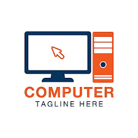

Komputer adalah alat yang dipakai untuk mengolah data menurut perintah yang telah diprogram.  Kata komputer semula dipergunakan untuk menggambarkan orang yang perkerjaannya melakukan perhitungan aritmetika, dengan atau tanpa alat bantu, tetapi arti kata ini kemudian dipindahkan kepada mesin itu sendiri. Pada awalnya, pengolahan informasi hampir eksklusif berhubungan dengan masalah aritmatika, tetapi komputer modern dipakai untuk banyak tugas yang tidak berhubungan dengan matematika